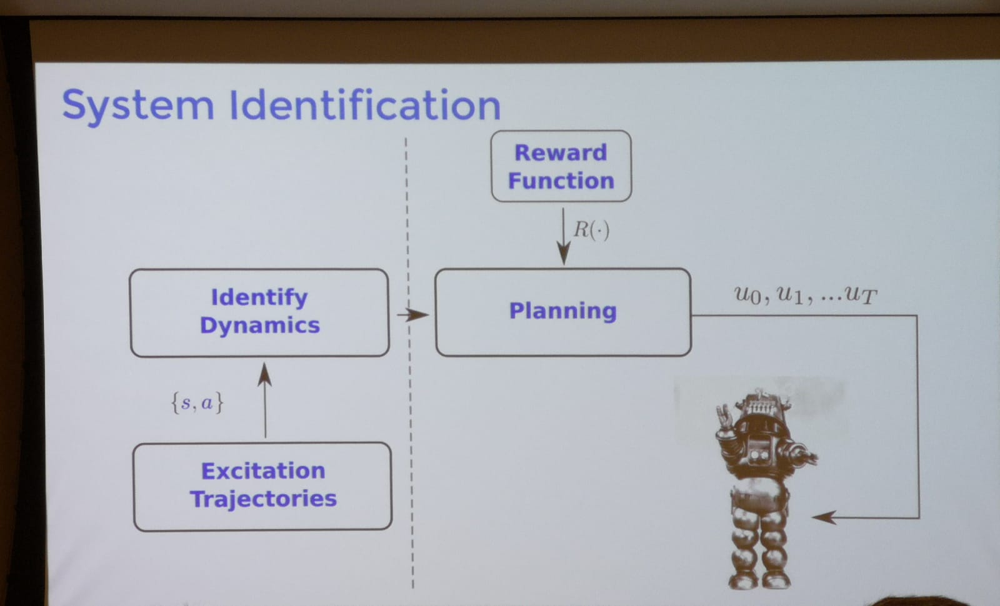

# Rethinking Model-based Reinforcement Learning
## Roberto Clandra (FAIR)
Reinforcement Learning has been successful in atari games, go etc. But these appraoches are difficult for many real world setting; especially, when a lot of data is absent or not easily available. How to scale to more complex, unstructured domains with less data?
- Model free Reinforcement learning has been the rage in ML community recently.
- (P) Local convergence guaranteed, Simple to implement, Computationally light
- (C) Does no generalize, Data-inefficient
- Model based
- (P) Does no generalize, Data-inefficient
- (C) Local convergence guaranteed, Simple to implement, Computationally light
Evidence form neuroscience that humans use both model-free and model-based algorithms [Daw et. al 2010].
In model based, collect data of ${s,a}$ and learn the dynamics of $s_{t+1} = f(s_t, a_t)$. Once learnt, plan to find a policy. With the policy $\pi(\theta^*)$, implement it in the real world and collect the ${s,a,r}$. Use this data to improve the model. THree main design choices:
- What sort of model do we want to use to predict our dynamics? Dynamic Model-- Forward dynamics (allow proper uncertainity propogation). Gaussian Process, Neural Netss, etc.)
- How to compute long therem predictions?-- Usually, recursive propogation in the state-action space, error compounds multiplicatively, how do we propogate uncertainty?
- What planner/policy to use?-- Offline prametrized policy, using online Model Predictive Control (Replan after fixed T for a finite horizon)
<p></p>
Collect excitation trajectories and use it to identify dynamics. Not closed loop, i.e. after planning the data gathered in the environment is not used to reupdate the dynamics. (Can this be used in )
- PILCO [Deisenroth et. al. 2011](https://www.ias.informatik.tu-darmstadt.de/uploads/Publications/Deisenroth_ICML_2011.pdf) - Dynamics Model-- Gaussian Model; Propogation-- Moment Matching; Planning-- RBF network optimized offline
- [What he said, yet to understand] Gaussian along the first moment of the original distribution. Everytime gausianize for moment matching. Closed from policy and policy optimized over all distributions over state and actions
- PETS [Chua et. al. 2018](http://papers.nips.cc/paper/7725-deep-reinforcement-learning-in-a-handful-of-trials-using-probabilistic-dynamics-models.pdf) Replace the gausiaan process with DNN and use an ensemble to compute a policy over mixed gaussian. Trajectory Propogation and Planning via Model Predictive Control. After 15 trials, cheeta was able to figure out working while the state of the art (that are model-free) algorithms need atleast 50 trials (SAC). Asymptotic performence is also better (obtains much higher reward if let to run for a similar amount of time as model-free algos).
Said that reward obtained during implementation of policy in the environment, the reward is discarded in the model-based RL settings (Really?). How do we use this?
- [Goal Driven Dynamics Learning via Baysian Optimzation](https://arxiv.org/abs/1703.09260)-- Instrad of optimizing th eforward dynamics wrt the NLL of the next state, we optimize wrt the reward. Computing the gradients analutically is intractable. Can be optimized using zero-order optimization: Bayesian optimizaton dynamics.
- Showed that they can learn the dynamics of the systems what are completely wrong but are extremely useful to solve the problem at hand-- Dubins Car. (What happens when the learning dynamics model can produce behavior that is unsafe.) Found that even for linear systems, they could find behavior that optimized the rewards but learnt a completely incorrect dynamics.
If bad models can be useful, can good models be not-useful?
- Objective mismatch arises when one objective is optimized in the hope that a second, often uncorelated, metric will also be optimized.
- System ID vs MBRL-- when solving one task in going from state to goal state, we should only care about the dynamics along the path from start to goal and not about the dynamics is the other parts of the environment.
Objective Mismatich in Model based RL
- Adversarially Generated DYnamics-- adversarial attack one part of the model to throw off the learner. (can this be used for generalization?)
- Not sure how to prevent bad model behavior (resulting in low reward) when dynamics are adv attacks. They tried to weight trajectories with $\epsilon$-optimal from the optimal trajectory (unfortunately, the optimal trajectory is often unknonwn in the real world).